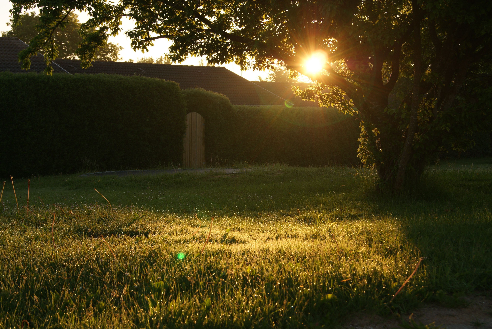

ROUTINEMy Slow Morning Routine
The 5-step ritual that helps me start each day with calm.
Read More →🌿 Slow living & soft days
Routines, journaling & everyday magic
Small moments, quiet mornings, and the little habits that make life feel a bit softer. This is where I document the everyday — the ordinary turned lovely.

ROUTINEThe 5-step ritual that helps me start each day with calm.
Read More →Tea, a blanket, and the perfect playlist — my ideal day in.
Read More →"Enjoy the little things, for one day you may look back and realize they were the big things." — Robert Brault